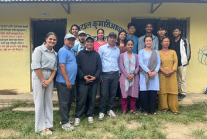

Ongoing
Science Beyond the Classroom
Support our talk session series bringing young researchers into schools across Nepal. Help with event coordination, student engagement, and logistics.
Express InterestCreate meaningful change through student and community-led volunteering initiatives across Nepal.
Support our talk session series bringing young researchers into schools across Nepal. Help with event coordination, student engagement, and logistics.
Express InterestJoin hands-on science launches at rural schools. Assist with experiments, equipment setup, and student mentorship during one-day events.
Express InterestHelp run NSSR workshops, symposiums, and the annual NSRF symposium. Roles include registration, AV support, photography, and attendee coordination.
Express InterestOur team will share a brief orientation covering expectations, schedule, and role-specific guidance.
Participate in the activity, gain experience, and receive a volunteer certificate for your contribution.

12 volunteers facilitated a hands-on physics demonstration for 200+ students. Activities included optics experiments and career guidance.

18 volunteers conducted chemistry and biology lab sessions for grades 9-10. Equipment donated to the school for ongoing use.

10 volunteers managed registration, AV support, and attendee coordination for the 3-day research symposium with 150+ participants.

8 volunteers assisted with participant onboarding, technical troubleshooting, and session documentation for the 3-day workshop.
Join a community of students and researchers creating tangible impact across Nepal. Your skills, time, and enthusiasm make a difference.
Get Started